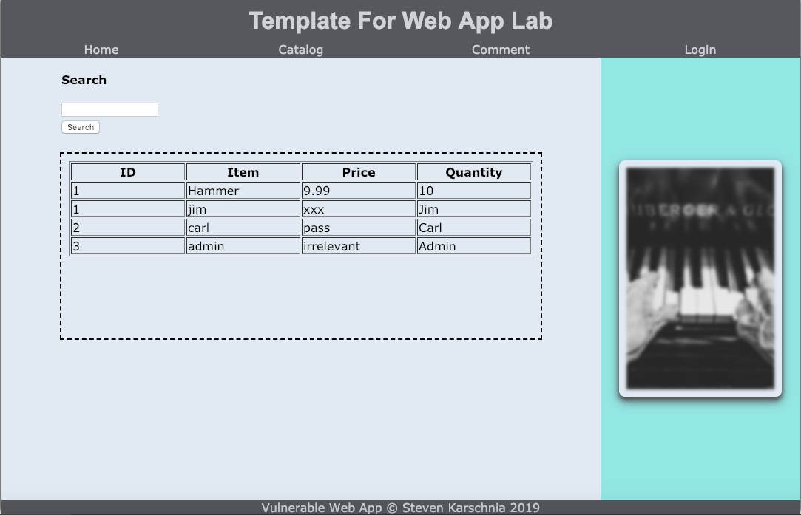

In September 2018 I took and passed the Certified Ethical Hacker exam. It is a test that is centered around ethical hacking, more specifically penetration testing and vulnerability assessment. I took a class centered around CEH where we practice real world penetration testing techniques on a set of virtual machines. [Link]
I created this sample web application for a class offered at NDSU centered around Ethical Hacking. The point of it is to be used as a lab assignment where students are supposed to try to find web application vulnerability. This specific application is susceptable to both SQL Injection and XSS attacks. [Link]
I am currently working for NDSU creating web applications. My main focus is on backend development of web applications. I mainly work in Java and occasionally PHP. My projects have been centered around securing applications and automating administrative tasks. [Link]